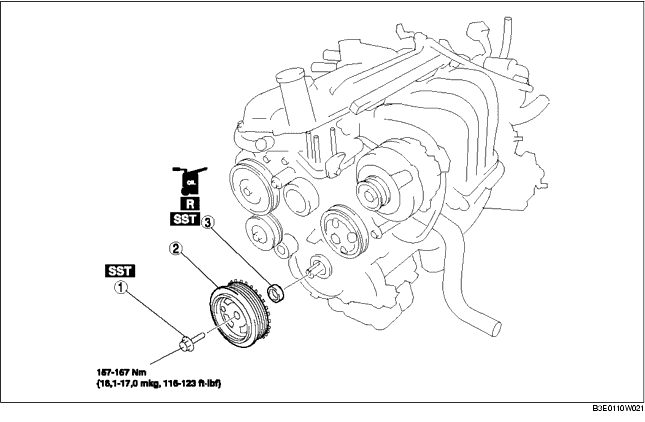

1. Die Batterieabdeckung ausbauen.
2. Das Massekabel der Batterie abklemmen.
3. Den Keilriemen ausbauen. (Siehe KEILRIEMEN AUSTAUSCHEN [ZJ, Z6].)
4. Gemäß der Reihenfolge in der Tabelle ausbauen.
5. Der Einbau erfolgt in umgekehrter Reihenfolge.

|
1
|
Befestigungsschraube für Kurbelwellen-Riemenscheibe
|
|
2
|
Kurbelwellen-Riemenscheibe
|
|
3
|
Vorderer Wellendichtring
|
1. Die Kurbelwellen-Riemenscheibe mit den SSTs festsetzen.
2. Die Befestigungsschraube des Kurbelwellen-Riemenscheibe entfernen.
1. Die Dichtringlippe mit einem Schneidmesser abtrennen.
2. Den Wellendichtring mit Hilfe eines umwickelten Schraubendrehers entfernen, dies um zu verhindern, dass der Kurbelwellendichtring beschädigt wird.
1. Sauberes Motoröl auf den neuen vorderen Dichtring auftragen.
2. Den Dichtring mit der Hand in die vordere Motorabdeckung einsetzen.
3. Den Dichtring mit dem SST und einem Hammer in den Zylinderkopf treiben.
1. Die Kurbelwellen-Riemenscheibe mit den SSTs festsetzen.
2. Die Befestigungsschraube des Kurbelwellen-Riemenscheibe festziehen.